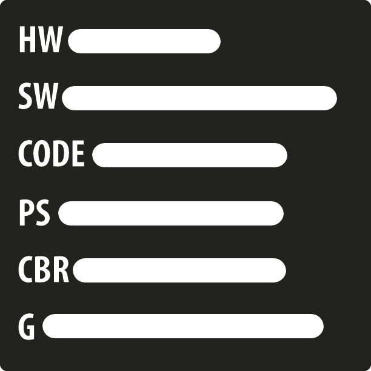
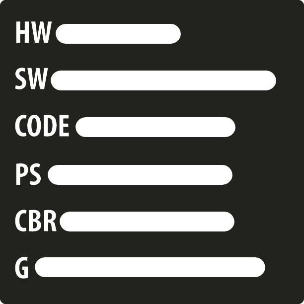

Spencer
I am 19 years of age and I am a class ten student at Year Up. Before Year Up I attended college at DeVry University. I was offered to attend the school while still in highschool to take dual courses. In 2013, I earned my highschool diploma and associates in Liberal arts graphic design. A week after graduating, I continued to attend Devry. Honestly I was too young and not in the right mind set when I attended school. I wasn’t ready and my only reason for going was to encourage my cousin to do more with themselves and be the first to earn a Bachelor’s degree. Surviving and a better view of life was my only concern at the moment in life. I stop school so I wouldn’t do anymore damage and continued to work.
Working jobs that I knew that I couldn’t grow at nor make enough money made me lose hope and I really didn’t know what to do. A friend told me about Year Up and the program grab my attention. I quit my job and attended the orientation. I attended two interviews before hand but I wasn’t sure if the program was for me and I didn’t believe that I would get into the program. After being accepted into the program, I told myself this is the time to regain my righteousness.
My hobbies consist of deep thinking, randomly dancing, creating art, and photography. I am involved with a dance group called The Era where I cover media and advertising while managing events. I am also associated with DDesigns multimedia group where we focus on media work. After I graduate from Year Up, I really don’t what’s next for me. The program has open doors up for me and I just don’t know which door I should walk through. I know that I want to better my community and empower people their own mind. I want to make a lot of money and travel the world while working with famous people to the homeless.
Interesting facts about me
- will be the first person to have a 4 year degree on my mother's side of the family
- Runs regularly to get his daily rush and to release any fustration
- double jointed in but shoulders
- Believe one day he will be succeful and famuous for the right reason
 
